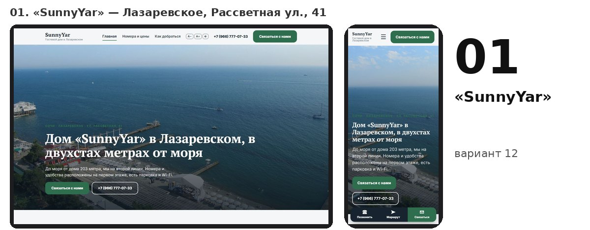
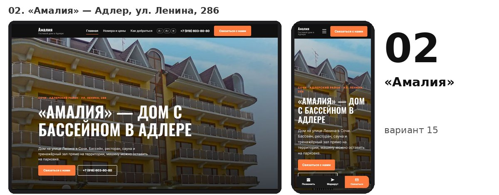

Сайты гостевых домов — ночь на 26.11.2026
2 объектов: Сочи.
Все ночи

01. «SunnyYar»
Лазаревское, Рассветная ул., 41 · вариант 12
Главная
·
Номера и цены
·
Как добраться

02. «Амалия»
Адлер, ул. Ленина, 286 · вариант 15
Главная
·
Номера и цены
·
Как добраться